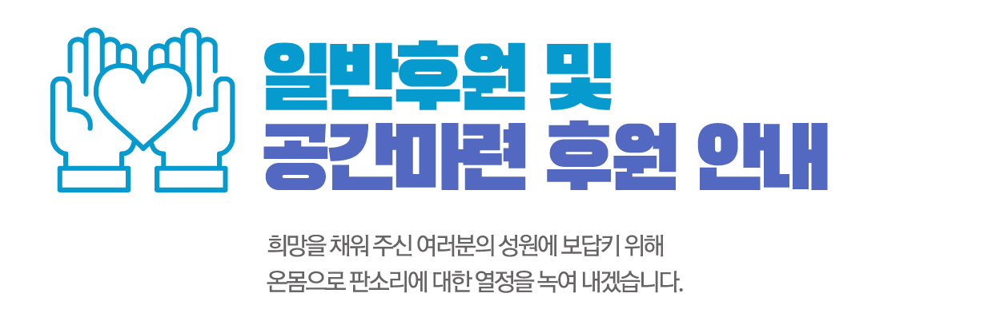

판소리 연구·공연·교육의 지속 가능한 공간 조성에 함께해 주세요.
공간마련 후원 안내
공간 조성 사업의 세부 계획과 후원 신청 방법은 확인 후 안내하겠습니다.
후원 목적과 사용계획이 검증된 자료를 기준으로 게시됩니다.


판소리 연구·공연·교육의 지속 가능한 공간 조성에 함께해 주세요.
공간 조성 사업의 세부 계획과 후원 신청 방법은 확인 후 안내하겠습니다.
후원 목적과 사용계획이 검증된 자료를 기준으로 게시됩니다.